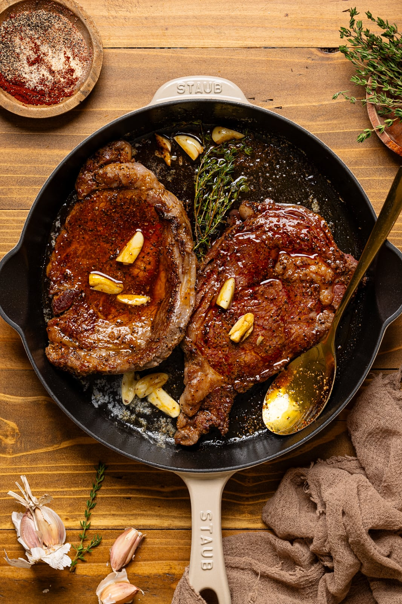

Pan Seared Steak

We Love a Juicy Steak
This Pan Seared Steak Recipe is an easy way to create Steakhouse quality steak at home with just a handful of ingredients, perfectly crusted, + a whole lot of flavor!
Ingredients
- Ribeye steak. I use organic + grass-fed. (You can also use New York Strip Steak or Top Sirloin Steak)
- Extra virgin olive oil. You can also use grapeseed oil or avocado oil.
- Seasonings. Sea salt, black pepper, garlic powder + smoked paprika
- Unsalted butter. Keeps everything juicy + moist.
- Garlic cloves. Fresh garlic is best here make sure it's peeled + halved.
- Lemon juice. The acidity cuts through the other flavors adding extra umami flavor.
- Fresh thyme sprigs. (You can also use rosemary sprigs or both)
Steps
- Pat dry --- Dry the steaks thoroughly using paper towels to achieve a flawless sear and minimize oil splatter.
- Generously season --- Season both sides of the steaks with salt, pepper, garlic powder, and smoked paprika just before cooking.
- Heat the pan --- Heat a medium 10-inch cast iron skillet over medium-high heat until hot and add the olive oil to coat the bottom. Once hot, add the steaks to the skillet and sear the steaks on the first side for 4-5 minutes or until a brown crust has formed and using tongs, turn them onto their opposite sides-------searing for another 4-5 minutes.
- Spread 1 table spoon of butter on each side of the stacked sandwich
- Add butter + aromatics--- Now, reduce the heat to medium and add the butter, garlic cloves, and thyme sprigs on the sides of the steaks in the pan. As the butter melts, spoon the butter sauce over the steak, slightly tilting the pan. Continue to spoon the butter sauce atop steaks for another 1-2 minutes. NOTE: Be sure to check the internal temperature of your steaks for desired doneness.
- Remove steak --- Rest 10 minutes before slicing against the grain.